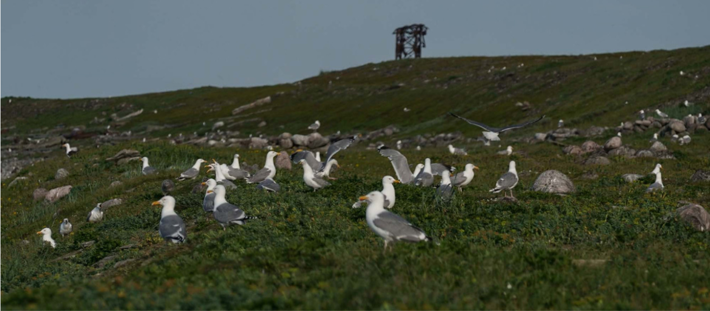
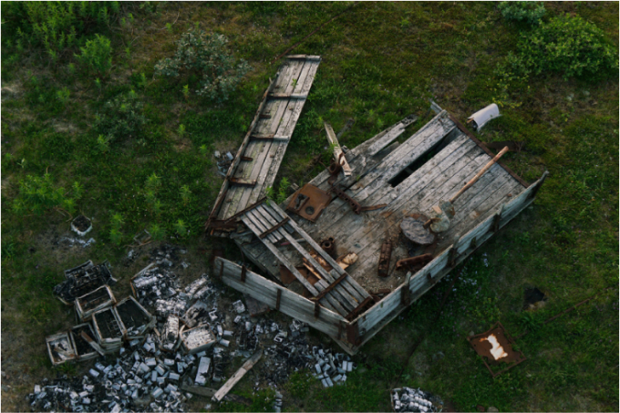

О проекте
Остров Кильдин: экологическая перезагрузка

С чего все начиналось

Первый этап экспедиции "Арктика. Генеральная уборка" прошёл в июне на Кильдине в Мурманской области. В 1990-е годы здесь расформировали советский военный гарнизон. Итог: металлическая техника, машины и проволока загрязняют хрупкую арктическую природу. Компактно собрать и вывезти техногенные объекты с острова — задача РГО и Северного флота. Вторым этапом стали работы на дальневосточном острове Врангеля, где участники собирают крупногабаритные бочки из-под горюче-смазочных материалов, оставшиеся от советских военных баз, и осуществляют мониторинг экологического состояния острова.
В северной части острова Кильдин расположен маяк Кильдинский-Северный. Он является одним из самых больших по дальности видимости на Мурманском берегу (22 мили). Это хороший ориентир при подходе к Кольскому заливу с севера и северо-востока.
Картографический сервис
КАК ЭТО РАБОТАЕТ?
Ваши наблюдения помогают ученым и защитникам природы в реализации плана по очистке и сохранению острова.